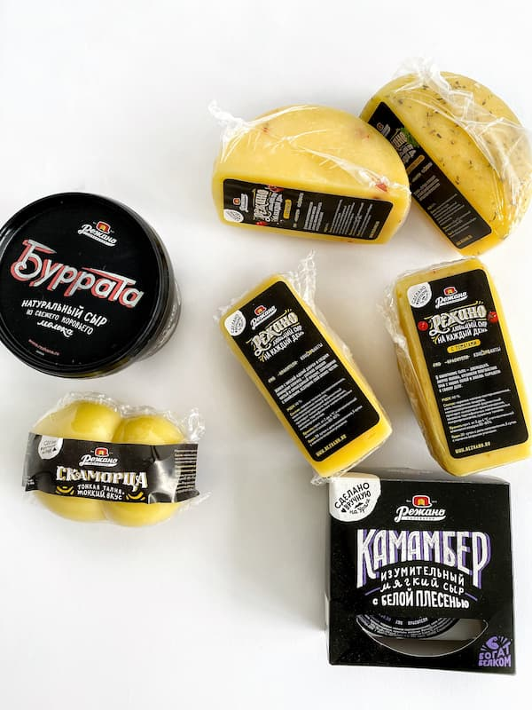
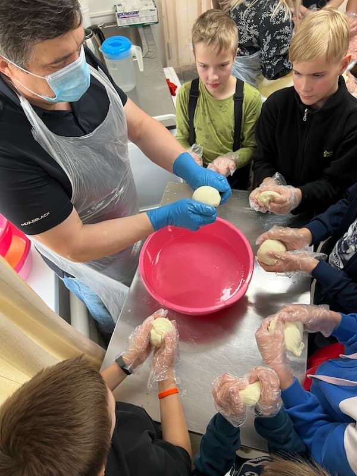
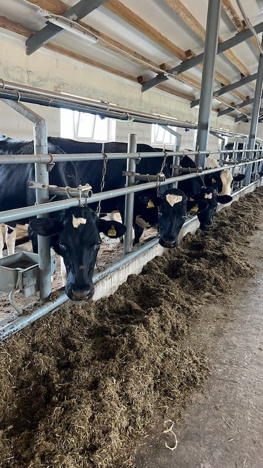
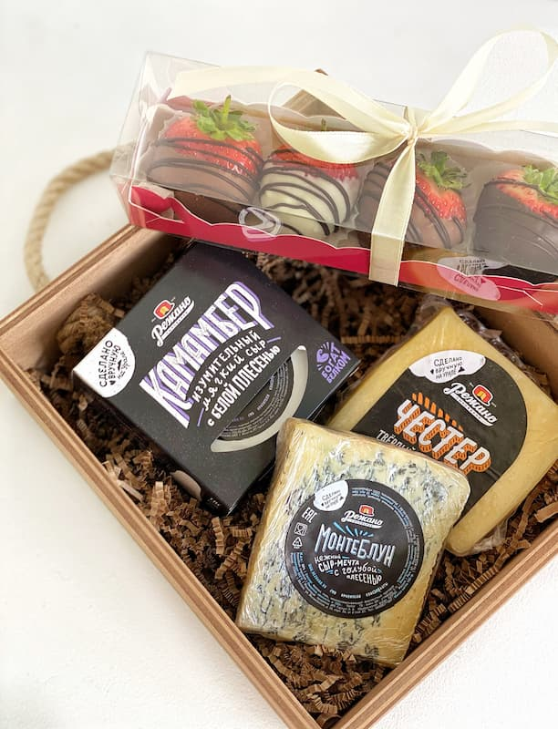
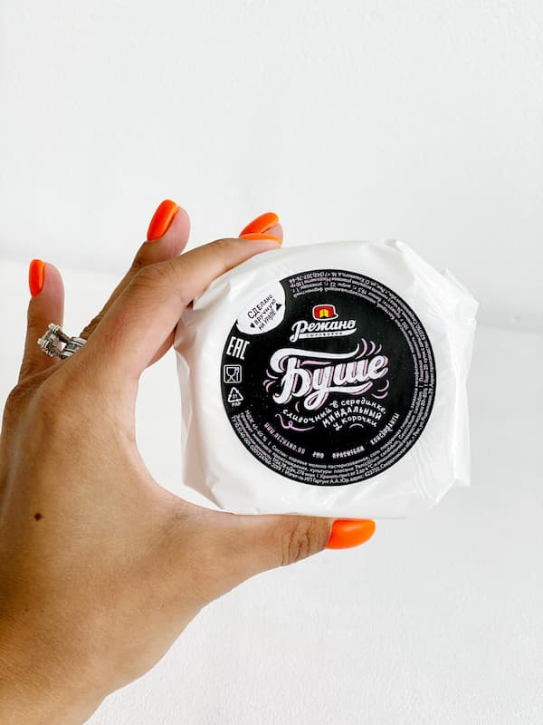

Сыроварня открыта для посетителей: любой желающий может приехать на экскурсию и через стеклянную стену увидеть процесс сыроварения вживую. Для детей и взрослых регулярно проводятся экскурсии и мастер-классы.

В своей работе команда следует принципам движения Slow Food, стремясь производить «хорошие, чистые и справедливые» продукты. Сыроварня сотрудничает с фермами, которые этично относятся к животным и природе.

Лазурь особенно гордится тем, что «Режано» — наш многолетний партнёр. Для них мы изготавливаем самоклеящиеся этикетки, разрабатываем и печатаем картонную упаковку, и всегда стараемся воплощать любые творческие идеи. Будь то лимитированные дизайнерские решения к праздникам или нестандартные формы — мы рады быть частью этого процесса. Нам близка их любовь к продукту и внимание к деталям, а ещё — их открытость к экспериментам в упаковке и печати. Это вдохновляет и нас пробовать новое.

